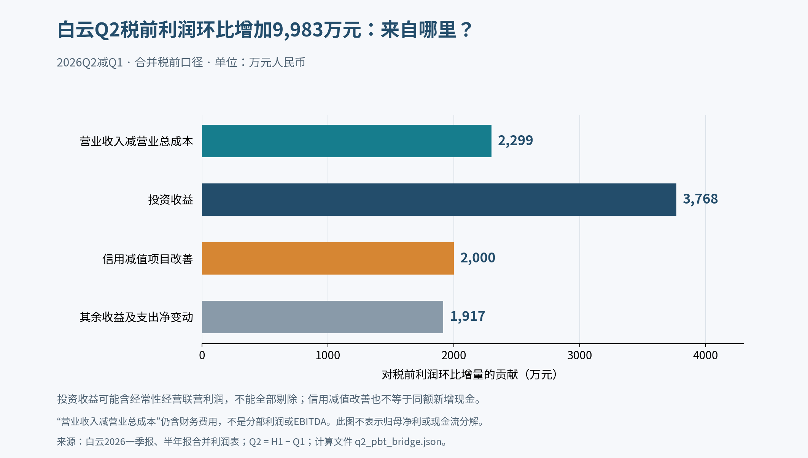

白云机场第二轮：经营修复已有证据，增长收益如何归属仍取决于交易
研究日2026-10-18；价格沿用已核2026-10-16收盘7.79元。独立补充首轮，不覆盖首轮文件。本轮聚焦白云，未重新评价其余三家公司。
判断变化
经营修复判断应比首轮更积极；对现价的判断还不能同幅上调。 新读取的公司原IR确认，Q2在航空收入环比下降时，非航收入仍增长，商业出租率超过八成，改善不只是客流故事。不过，拟议资产交易尚未确定分成、成本承担及购买价；公司甚至明确，拟购买部分转固后费用预计高于当前对应折扣租金。“交易落地就会降低总成本”没有证据。
7.79元的投资吸引力，主要取决于商业改善能否复现，以及新合同允许上市公司留下多少增量。愿承担交易定价风险的成长投资者可以更积极看待经营验证进展；要求利润归属与资金需求先明确的投资者，现有证据仍不足以确认安全边际。这不是用一个PE或当期现金流门槛否定成长投资。
先纠正估值方法的潜在偏向
首轮15/20/25倍仅是盈利要求换算，不能决定何为公允倍数，也不能用受油价冲击或投产初期的利润直接否定价值。白云若机械年化Q1、Q2扣非，同一价格分别对应约30.22、20.65倍，差异来自选择不同季度，并不代表内在价值几个月内按同幅变动。本轮不采用任何一种季度年化结果作预测；统一倍数对照退出投资性裁决，只保留为口径检查。 周期企业须估跨周期盈利；扩容企业须判断租费、资本投入与增量回报，而非先规定低PE/正自由现金才可投。
1. 新经营证据：非航增长真实，季度利润改善不能全部归因于主营
9/3、9/4原IR披露约数：Q1/Q2航空收入8.7/8.4亿元，非航11.1/12.5亿元，非航环比约+12.61%；增长主要来自航站楼商业等特许业务。整体商业出租率超过八成，T2略高于T3。这提高了“容量转化为经营收入”的可信度，但出租率不是租金单价、收现率或成熟项目回报。9/3原IR，第2页；9/4原IR，第2页
实际用半年报减一季报拆算，合并口径、单位亿元：
| 指标 | 2025Q1 | 2025Q2 | 2026Q1 | 2026Q2 |
|---|---|---|---|---|
| 营业收入 | 18.215 | 19.045 | 19.770 | 20.826 |
| 毛利润 | 5.073 | 5.678 | 3.994 | 4.663 |
| 毛利率 | 27.85% | 29.81% | 20.20% | 22.39% |
| 扣非归母净利润 | 2.651 | 2.968 | 1.661 | 2.431 |
| 收入减营业总成本* | 3.222 | 3.812 | 2.117 | 2.347 |
| 经营现金流净额 | 9.144 | 8.212 | 7.618 | 9.806 |
*这里仍含财务费用，尚未加其他收益、投资收益、减值转回等；不是公司披露分部利润，也不是EBITDA。
Q2扣非同比−18.08%，好于Q1的−37.35%；毛利率环比提高2.19个百分点。不过2025Q2毛利率也比Q1高1.96个百分点，不能把全部环比提高视作新产能效应。Q2税前利润环比增加9,983万元，其中收入减营业总成本增加2,299万元；投资收益增加3,768万元，信用减值项目改善2,000万元，其余来自其他收益、处置等。投资收益含有真实经营性联营利润，不能全部判为一次性；但不能把整笔利润回升写成机场本体的经营杠杆。一季报，第1、9—11页；半年报，物理PDF第35—36、39—40页

原图校验
402a567bf5f1858ef42904d78d2419671a4e471320745a0a5ec086402abdf0ae另一个正面校验：H1营业成本增量5.429亿元，减去明确披露的新增三期短租费用4.136亿元，余下成本增量1.293亿元，约+4.88%，低于营收+8.95%；对应租费前的毛利增量约2.042亿元。它说明经营收入在吸收新增费用，不能说增长完全无效；这不是T3单项目利润，因为仍混合旧机场、转场和其他业务。即使再按下节折旧变更的半年敏感度扣去0.411亿元，仍有约1.631亿元改善，但不足以抵消全额三期费用。三期费用取自半年报物理PDF第137页关联租赁附注，属于明确披露的短期租赁费用。
免税新增事实也需分口径：H1经营权费收入约2.4亿元，合资公司投资收益近1,700万元；二者分别进入收入和投资收益，不能加成“免税销售额”，也不能全部当机场净利润。9/24公司仍未公开免税实际销售，所以不能反推出T2是否超过保底提成门槛。9/1原IR，第2页；9/24原IR，第2页
2. 折旧下降的补充解释：不是新增经营现金
4/30公告将自有跑道、滑行道、停机坪、道路、桥梁架折旧年限由30年改为40年，自2026/1/1执行；公司预计全年减少折旧8,216.90万元、增加归母净利6,162.68万元。这不是集团T3资产转入上市公司的折旧政策。2026-022原公告，第2—3页
若仅按时间平均分配该年度估算，半年税前/税后影响约4,108.45/3,081.34万元，每季约2,054.23/1,540.67万元。减去这个假设性影响后，H1扣非同比降幅约32.65%，Q1/Q2分别约43.16%/23.27%，修复方向仍在，幅度不能全归于经营。由于生效日为1/1，不能编成Q2才一次性释放半年折旧收益。
限制必须保留：半年报物理第67页“重要会计估计变更”勾选不适用，未单列该变更半年实际影响，与专项公告未形成完整金额衔接；页面已经目视核验。因此上述只是敏感度，不擅自改写实际报表。半年报物理PDF第120页的固定资产折旧同比减少4,602.80万元，也不能全称现金降本，不能认定全部由这一次变更造成。
3. 资产方案：有改善资本效率的路径，尚无已锁定的低成本结论
| 时点与证据 | 已知状态 | 不能推导的事 |
|---|---|---|
| 4/28通过、4/30公告 | 通过讨论框架：T3及配套受托管理并按比例确认收入；飞行区等长期租赁；部分指廊、停车楼、设备等购买 | 不是具体交易批准、协议生效或交割完成 |
| 5/7、7/21原IR | 临时整体租费7,490万元/月含税；约相当于相关资产折旧摊销及资金成本的39% | 不是永续折扣；不能将整体费用除39%后当未来租金，未来资产范围将拆开 |
| 9/3、9/4原IR | 拟购买范围细分并做审计评估；管理层认为自有资金应可满足拟定购买范围 | 未披露购买价、最终融资、分成比例、各项成本承担 |
| 9/15、9/23、9/24原IR | 仍在推进与协商；T3当时仍为租赁使用 | 没有已经实施收入分成的依据 |
4/30方案全文，第2—5页；5/7原IR，第2页；7/21原IR，第1—2页；9/23原IR，第2页
框架存在有价值的积极路径：T3主体不必全由上市公司出资购买，可能降低自有资本需求；T1关闭减少三楼同时运行费用，商业继续爬坡也可能提高收益。但9/3公司明确提示，拟购买部分权属转移后的折旧摊销预计高于现阶段对应租费。飞行区租赁拟逐年提高调整系数至全成本；T3则让渡一部分可分成收入。不能只把节省临时租金当净增利润。
真实比较式应为：
增量税前利润 = 节省的临时租费 − 让渡的T3可分成收入 − 新飞行区租费 − 购买资产折旧 − 实际融资费用或减少的利息收入 + 运营节省。
例如对每10亿元可分成收入，上市公司份额减少10个百分点，就减少1亿元税前收入贡献，其他成本不变、税率25%时约减少0.75亿元净利；这是参数单位效应，不是对未披露分成作预测。费用和资本支出还必须分开：购买价是资金投入，不能当期全扣利润，也不能在扣折旧后再重复扣本金。资本的机会成本另用于投资回报评估，不能冒充会计税前费用。是否值得买最终看投入资本回报与合同期限，而不是费用数字单独降低。
4. 对现价的条件方向与本轮停止点
- 经营前景：较首轮上调。 已出现非航增收、出租率和扣非降幅收窄的实际证据，不能继续只用“未来可能爬坡”概括。
- 企业质量：优势与治理约束并存。 国际枢纽和商业网络可创造价值，但上市公司只能取得合同允许留下的收益。
- 投资性：维持条件性，不给机械否定，也尚未转为明确低估。 若商业增量复现、T1整合节省能够兑现，且最终租赁/分成/购买条款保留合理的增量回报，7.79元的吸引力可以明显提高，届时应允许上调判断。反之，若合同重定价和购买后的费用吸收了增量，客流高增长不足以形成股东价值。限制结论的是尚未确定的收益归属，而不是“24.91倍扣非PE太高”。
已实际查过4/30方案及关联交易预计、5/7和5/28会议、7/21会议、9/1至9/24系列IR、半年报关联租赁及往来附注，并检查至10/16最新公告列表；没有取得最终交易协议、分成比例、三期租费现金付款计划或独立项目回报表。9/24仍不公开免税销售。此处停止填数，不能用“没有找到”断言未来交易不会发生，也不把尚未形成的条款写成确定结果。本轮白云未使用10/17之后的新财务事实来解释10/16收盘。
复算、原始PDF、检索路线及缺口保存在本补充包。季度数据为实际差分；折旧分期与分成单位效应均明确标记为假设。未给出统计概率、共识预期或目标价。